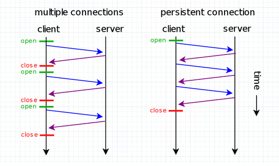
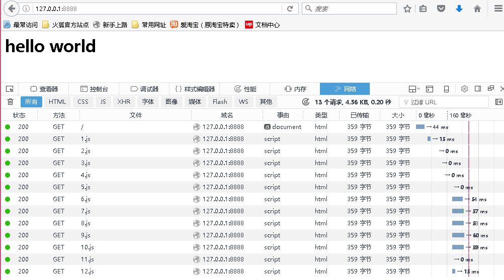

Keep-Alive是什么
在早期的HTTP1.0版本中，每个http请求都要求打开一个tcp socket连接，并且使用一次之后就断开这个tcp连接。这种效率和性能是最低的，因为建立一个TCP连接需要3次握手，而断开一个链接需要TCP四次握手。而在一个网页页面中含有的大量引入的js、css、img文件，如果每个请求都为之创建一个socket连接，这不仅是性能的底下而且还会给服务器带来很大的压力。 为了改善这种状态希望在一个页面中能重复的利用一个Socket连接来发送请求数据，
于是就发明了keep-alive即在一次TCP连接中可以持续发送多份数据而不会断开连接。通过使用keep-alive机制，可以减少tcp连接建立次数，也意味着可以减少TIME_WAIT状态连接，以此提高性能和提高httpd服务器的吞吐率(更少的tcp连接意味着更少的系统内核调用,socket的accept()和close()调用)。但是，keep-alive并不是免费的午餐,长时间的tcp连接容易导致系统资源无效占用。配置不当的keep-alive，有时比重复利用连接带来的损失还更大。所以，正确地设置keep-alive timeout时间非常重要。
keepalvie timeout。

Keep-Alive如何设置
在HTTP1.1协议中都默认了支持keep-alive连接，而且所有浏览器都支持了这种模式，默认在HTTP头中自带了如下信息。1
Connection: keep-alive
这种设置告诉服务器我是支持keep-alive连接的。服务器接收到请求解析HTTP头Connection看到是keep-alive，在响应客户端后时判断了请求数没有超过maxKeepAliveRequests（Tomcat中默认是100）于是在响应头中设置了Connection: keep-alive，告诉浏览器Socket连接我没有关闭你再用这个连接给我发送数据。反之如果超过了就将Connection设置为如下1
Connection: close
告诉客户端连接我已经关闭了你需要重新建立连接。
这样会带来一个问题，因为在HTTP的早期版本采用关闭连接的办法来划定报文的结束，但是keep-alive的连接Socket并没有关闭所以浏览器不知道报文的结束于是将一直阻塞等待有新的数据可读，浏览器显示加载状态。于是需要借助HTTP头的另一个属性Content-Length，来告诉浏览器我的报文数据大小，从而来确定报文截尾。更多的内容请查看文章HTTP协议：不可小觑的Content-Length
基于Java服务端的Keep-Alive的连接如何实现
1 | public class KeepAliveServer { |
在这里需要特别说明的几个地方：
（1）：socket.setSoTimeout(1000);
使用指定的超时时间启用/禁用SO_TIMEOUT毫秒。 使用此选项设置为非零超时，对与此Socket相关联的InputStream的read（）调用将阻塞只有这段时间。 如果超时到期，java.net.SocketTimeoutException 被引发，虽然套接字仍然有效。 必须启用选项之前进入阻塞操作有效。 的timeout必须> 0。超时为零被解释为无限超时。
（2）：while(true)
默认为长连接。循环读取socket中的数据，每一次循环都将是客户端的一次请求
（3）：inputStream.read(b);
读取socket中的数据本次读取完成将返回-1，再次读取的时候如果Socket中没有数据可读将一直阻塞，除非有数据可读或者设置了setSoTimeout()。
我们启动服务浏览器发送请求控制台输出如下1
2
3
4
5
6客户端：/127.0.0.1:2992序号：1
客户端：/127.0.0.1:3000序号：2
客户端：/127.0.0.1:3001序号：3
客户端：/127.0.0.1:3002序号：4
客户端：/127.0.0.1:3003序号：5
客户端：/127.0.0.1:3004序号：6
Firefox浏览器网络请求信息

总结
由此可以看出浏览器发送了了13个请求，但后台只有6个访问连接说明了其中有的请求共用了连接。这里6个连接也说明了Firefox的请求并发是6，每个并发都是一个新的连接。
各个浏览器并发请求数请参考浏览器并发请求数
HTTP Keep-Alive于Socket KeepAlive有何区别
HTTP的Keep-Alive是http代理（通常指浏览器）与HTTP服务器之间的约定。告诉服务器处理完本次请求不要关闭连接，我待会还要使用，而服务器在响应HTTP头上也带有Keep-Alive告诉客服端我连接以及保存你可以继续使用。
Socket的KeepAlive是在客户端与服务器建立了长连接以后，如果应用程序或者上层协议一直不发送数据，或者隔很长时间才发送一次数据，当链接很久没有数据报文传输时如何去确定对方还在线，到底是掉线了还是确实没有数据传输，链接还需不需要保持，这种情况在TCP协议设计中是需要考虑到的。TCP协议通过一种巧妙的方式去解决这个问题，当超过一段时间之后，TCP自动发送一个数据为空的报文给对方，如果对方回应了这个报文，说明对方还在线，链接可以继续保持，如果对方没有报文返回，并且重试了多次之后则认为链接丢失，没有必要保持链接。
HTTP Keep-Alive与TCP Keep-Alive，不是同一回事，意图不一样。HTTP Keep-Alive是为了让TCP活得更久一点，以便在同一个连接上传送多个HTTP，提高Socket的效率。而TCP Keep-Alive是TCP的一种检测TCP连接状况的保鲜机制。